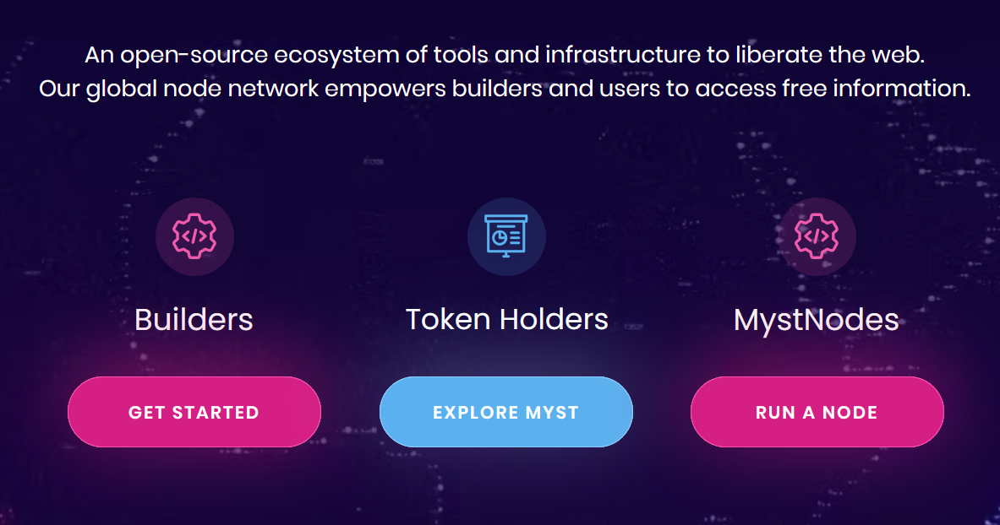
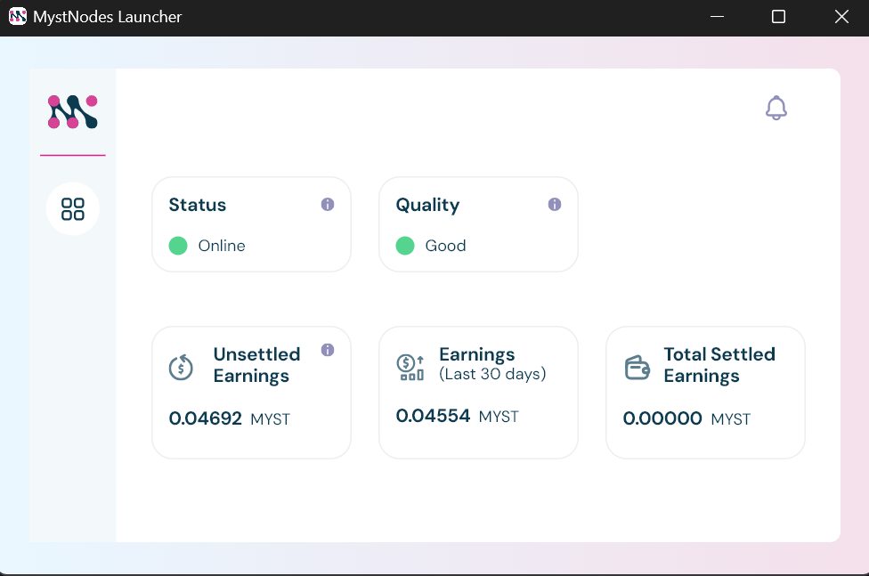
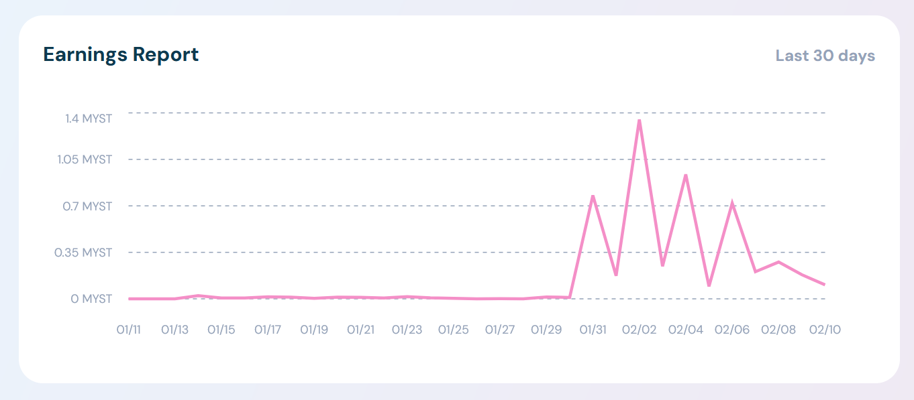

Un projet transparent pour un internet libre et rentable
Introduction : Quand la transparence fait la différence
Il y a peu, je suis tombé sur le projet Grass Foundation, qui propose de récupérer de la bande passante inutilisée pour l'intelligence artificielle en échange de tokens Optimism. Sur le papier c'est cool, mais en creusant, j’ai découvert un manque flagrant de transparence : pas de code open source, des zones d’ombre... Bref, un risque inutile à mes yeux voir Red flag.
Mais le concept m’a plu. Qui n’a pas de bande passante inutilisée (la nuit ou pendant qu’on bosse) ? Donc je poursuis mes recherches et, au deuxième jour, je tombe sur Mysterium Network. Et là, c’est le déclic : un projet sérieux, clair, l'ethyque me parle et surtout complétement transparent.
Le concept de Mysterium : Une alternative décentralisée aux VPN
Mysterium est bien plus qu’un simple projet. C’est une réponse à la censure et aux menaces croissantes sur la vie privée en ligne. Voici comment ça fonctionne :
- 🌐 Un réseau décentralisé : Mysterium remplace les VPN traditionnels par un modèle communautaire.
- 📶 Partage de bande passante : En tant qu'utilisateur, tu deviens un fournisseur. Tu loues ta connexion inutilisée à d’autres, créant ainsi un réseau distribué.
- 🪙 Récompenses en MYST : Tu gagnes des tokens "MYST" en retour, utilisables dans l’écosystème ou échangeables.

choisi ta manière de participer
Pourquoi choisir Mysterium ?
1. Transparence totale
- ✅ Code open source : Disponible sur GitHub, tout est accessible pour vérification.
- ✅ Blockchain Ethereum : Chaque transaction est enregistrée, garantissant traçabilité et sécurité. Disponible également sur Polygon.
- ✅ Accés et réglages total : Chaque option et réglable via le logiciel et sur le site. Accés au noeud crée et rendement en temps réel.
Menu ouvert en local
Sessions des noeuds crées
réglage de la limite MB/s
2. Une éthique solide
Mysterium ne promet pas de révolution marketing. Je n'ai pas trouvé le blabla habituel. C’est un projet pragmatique, ancré dans des valeurs de décentralisation et de confidentialité. En participant, tu soutiens un internet libre, tout en gagnant un revenu passif.
3. Des cas d’usage concrets
- ✅ Contourner la censure dans les pays restrictifs.
- ✅ Protéger ta vie privée face aux géants du numérique.
- ✅ Créer une alternative aux VPN centralisés, souvent vulnérables.
Le Token MYST : Un moteur économique transparent
- Type : MYST est un token ERC-20 basé sur Ethereum, assurant stabilité et interopérabilité.
- Utilisation :
- Paiement des services sur le réseau (utilisation VPN).
- Récompenses pour les fournisseurs de nœuds. ( toi et moi )
- Particularités : Pas encore listé sur les grands exchanges, ce qui peut représenter une opportunité pour les pionniers.
Et perso étant donné qu'il ne s'agit pas ici d'investir mais de récolter, je ne prends pas de risque. A voir si ce token est solide maintenant. D'ailleur c'est quoi un bon token ?
MystNodes Launcher : Gagner des MYST en partageant ta bande passante
Comment ça marche ?
- Installation : Télécharge le logiciel MystNodes Launcher et connecte ton wallet Ethereum (par ex., MetaMask).
- Partage : Active ton nœud pour commencer à partager ta bande passante.
- Récompenses : Gagne des tokens MYST en fonction de ton activité.
Exigences techniques
- 🛜 Une connexion Internet rapide et stable (indispensable pour maximiser tes gains).
- 💻 Un ordinateur ou serveur capable de fonctionner en continu (par exemple, un Rasberry Pi).
Sécurité garantie
Mysterium utilise des protocoles pour anonymiser les données transitant par ton nœud, minimisant ainsi les risques d’utilisation malveillante.
Mes premiers pas avec Mysterium
Malgré ma connexion de campagne ça fonctionne parfaitement. Si tu as la fibre, c’est encore mieux et tu peut aussi configurer un Raspberry Pi en mode server.

MystNodes Launcher en action aprés 24h d'utilisation
Un revenu passif, mais réaliste
Attention: Mysterium n’est pas un plan pour devenir riche. Tout comme Publish0x.com dont je parlais dans un article, c’est une opportunité d’obtenir un petit revenu passif éthique, sauf qu'ici, tes gains sont automatiquement versé sur ton wallet tout les 5 Myst. ( perso je les stack et info bonus, le Myst n'est pas encore listé sur les exchanges 😉) En participant à un projet qui améliore l’internet de demain. Les gains varient selon :
- La demande dans ta région.
- La qualité de ta connexion (vitesse et latence).
- Le temps d’activité de ton nœud.
Retour d'expérience aprés un mois de teste.
Aprés un mois de test
Premier Myst reçu pile un mois aprés le démarage de mon noeud
Expérience concluante pour ce premier mois. Ma stratégie avec ce token est de les accumuler jusqu'au prochain bullrun, vers 2028. Au rythme actuel j'aurais d'ici là accumulé environ 240 MYST, valant actuellement 72 USDC. Si ce projet fonctionne et qu'il fini par être listé sur les exchanges, on peut espérer multiplier ce montant par 8 environs. Voila, comme promis je ne vend pas de rêve ici mais des oportunités sans effort de récuperer des billets en participant à l'internet de demain, plus safe et plus libre.
Conclusion : Pourquoi Mysterium vaut le détour
Mysterium n’est pas une promesse vide. C’est une plateforme solide, transparente et axée sur la communauté. Si tu es passionné par la technologie, la décentralisation, et que tu veux contribuer à un internet plus libre, ce projet est pour toi.
Prends le temps de te renseigner, essaie le MystNodes Launcher et viens partager ton expérience. Un projet comme Mysterium, ça mérite qu’on s’y intéresse.